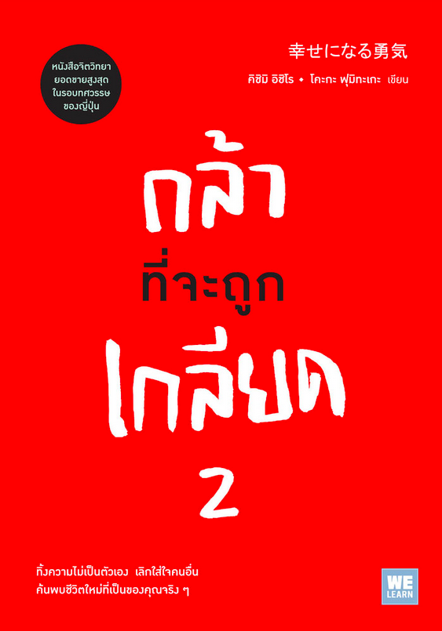

嫌われる勇気
คิชิมิ อิชิโร, โคะกะ ฟุมิทะเกะ เขียน
กล้า
ที่จะถูก
เกลียด
2
ทิ้งความไม่เป็นตัวเอง เลิกใส่ใจคนอื่น
ค้นพบชีวิตใหม่ที่เป็นของคุณจริงๆ
สารบัญ
บทที่หนึ่ง
คนอื่นเลวร้าย
เราช่างหน้าส่งสาร
- หลักจิตวิทยาแบบแอดเลอร์เป็นศาสนาหรือไม่ 28
- เป้าหมายของการสอนคือ
การ "พึ่งพาตัวเองได้" 36
- การเคารพคือ "การมองคนในแบบที่เขาเป็น" 44
- ใส่ใจใน "สิ่งที่คนอื่นใส่ใจ" 52
- ถ้ามี "ชีวิตและจิตใจแบบเดียวกัน" 57
- ความกล้าแพร่ถึงกันได้ ความเคารพก็เช่นกัน 60
- สาเหตุแท้จริงที่ "เปลี่ยนแปลงไม่ได้" 64
- "ปัจจุบัน" คือสิ่งที่กำหนดอดีต 70
- คนอื่นเลวร้าย ส่วนเราช่างน่าสงสาร 73
- หลักจิตวิทยาแบบแอดเลอร์ไม่มี "เวทมนต์" 76
บทที่สอง
ทำไมจึงไม่ควรใช้วิธี
ให้รางวัลและลงโทษ
- ห้องเรียนคือประเทศประชาธิปไตย 82
- ห้ามว่า แล้วก็ห้ามชม 87
- "เป้าหมาย" ของการมีพฤติกรรม
ก่อปัญหาคืออะไร 92
- เกลียดฉันสิ! เลิกแยแสฉันที! 98
- ถ้า "ลงโทษ" แล้วการกระทำ "ความผิด"
จะหมดไปหรือไม่ 106
- การสื่อสารที่ชื่อว่าความรุนแรง 112
- การโกรธและการดุด่า
ตั้งอยู่บนหลักการเดียวกัน 116
- ชีวิตเรา เลือกได้ 121
บทที่สาม
จากการแข่งขัน
ไปสู่การร่วมมือ
- อย่าสอนด้วยการชม 134
- รางวัลคือต้นเหตุของสงคราม 139
- โรคร้ายของสังคม 142
- ชีวิตเริ่มต้นจาก "ความไม่สมบูรณ์" 146
- ความกล้าที่จะ "เป็นตัวเอง" 154
- พฤติกรรมก่อปัญหามีเป้าอยู่ที่ "คุณ" 159
- ทำไมคนเราถึงอยาก "ช่วยเหลือคนอื่น" 163
- การสอนคือการ "ผูกมิตร" ไม่ใช่ "งาน" 169
บทที่สี่
จงให้แล้วท่านจะได้รับ
- ความสุขทั้งหมดของมนุษย์ล้วนมาจาก
ความสัมพันธ์กับคนอื่น 178
- จะ "เชื่อถือ" หรือ "เชื่อใจ" 184
- ทำไม "งาน" ถึงเป็นหนึ่งในภารกิจของชีวิต 190
- ไม่มีงานไหนเล่นหรือด้อยไปกว่ากัน 194
- ทุกอย่างขึ้นอยู่กับว่า "จะใช้สิ่งที่มีอยู่
ให้เป็นประโยชน์ได้อย่างไร" 199
- คุณมีเพื่อนสนิทกี่คน 206
- เราต้องเป็นผ่าย "เชื่อ" ก่อน 210
- มนุษย์ไม่มีวันเข้าใจกันได้ตลอดกาล 214
- "วันธรรมดาทั่วไป" คือวันที่ต้องตัดสินใจ
ด้วยเช่นกัน 218
- จงให้แล้วท่านจะได้รับ 222
บทที่ห้า
เลือกชีวิตที่มีความรัก
- ความรักไม่ใช่ "การตกหลุม" 230
- เปลี่ยน "เทคนิคการเป็นที่รัก"
เป็น "เทคนิคการรัก" 234
- ความรักคือ "สิ่งที่คนสองคน"
ต้องทำร่วมกันให้สำเร็จ 238
- เปลี่ยน "ประสาน" ของชีวิต 242
- การเป็นอิสระคือการหลุดพ้น
"ตัวเราเอง" 247
- ความรักมีเพื่อ "ใคร" กันแน่ 253
- ทำอย่างไรจึงจะได้ความรักจากพ่อแม่ 257
- มนุษย์มักกลัว "การรัก" 263
- เนื้อคู่ไม่มีอยู่จริง 267
- ความรักคือ "การตัดสินใจ" 271
- จงเลือกไลฟ์สไตล์ใหม่ 274
- ใช้ชีวิตที่เรียบง่ายอย่างต่อเนื่อง 280
- ถึงมิตรสหายที่จะสร้างยุคสมัยใหม่ 283
บทส่งท้าย293
ประวัติผู้เขียน301